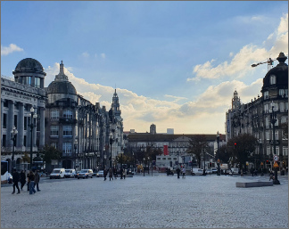

|  | 포르투갈 | 포르투갈 포르투 상 벤투역 상 벤투역은 16세기 화재로 폐허가 된 성 베네딕토 수도원을 1900년 카를로스 1세가 당대 최고 건축가 마르케스 다 실바와 화가 조르주 콜라수를 기용해 아름다운 기차역으로 꾸민 것이다. | |
|---|---|---|---|
| 유럽여행 | 포르투 | 여행추천 | 기차역 내부의 아줄레주는 포르투갈의 역사적 사건을 묘사하고 있는데, 이 작업에 1905년부터 1916년까지 11년간이 걸렸으며 무려 2만 장의 타일이 들어갔다. 그 위에는 1140년 레온 왕국의 독립 전쟁, 포르투갈의 시조인 아폰수 1세, 1387년 주앙 1세와 그의 왕비인 필리파가 포르투에 도착하는 장면, 전투에서 승리한 항해왕 엔리케 왕자 등 포르투갈의 역사적 사건이 세밀하게 묘사돼 있다. |
| 여행시간 | 3시간 | 여행일자 | 2022. 12. 09 |